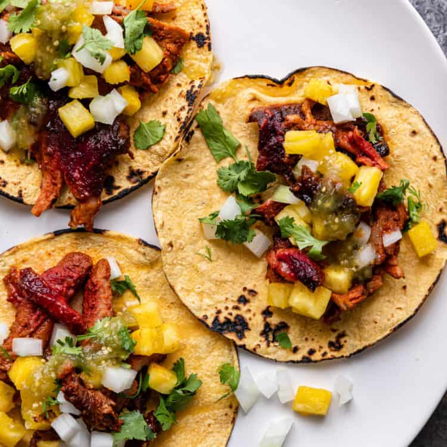

Tacos Al Pastor

These are my all time favorite at-home tacos!
This recipe from Kevin is Cooking is perfection. Look no further for delicious and easy street tacos at home. I found this recipe shortly after moving out of LA and was desperately missing the wide availability of amazing pastor. While nothing beats the amazing flavor and texture you get from spit-roasted pork at a taqueria, this is as close as I've found!
The best part of this recipe is that Kevin provides instructions for cooking the pork using several different methods, including my always-favorite Instant Pot (perfect for those of us perpetually short on time). Check out the ingredients and recipe below and reference the link above to Kevin's site if you're looking for additional info.
Ingredients
Marinade
- 3 dried pasilla negro chiles
- 3 dried Guajillo chiles
- 2 dried chiles de arbol
- 2 T achiote paste
- 1 white onion
- 3/4 C pineapple juice
- 1/4 C white vinegar
- 5 cloves garlic
- 3 t salt
- 1 t Mexican oregano
- 1/2 t ground cumin
- 1/2 t cinnamon
- 1/8 t ground clove
- 2 t epazote
Assembly
- toasted corn tortillas
- 1 1/2 C fresh pineapple, finely diced
- 1 white onion, finely diced
- 1 bunch cilantro, chopped
- limes, cut into wedges
- salsas of choice
Directions
Prepare the dried chiles
- Using gloves, remove the stems and scrape out the seeds from the dried chiles. Toast over low heat in a dry skillet for a few minutes. Allow chiles to cool, then grind to a powder in a spice/coffee grinder. Alternatively, soak the peppers in hot water for 20 minutes, then blend with the marinade ingredients.
Marinade
- To a blender, add the chili powder, achiote paste, onion, pineapple juice, vinegar, garlic, salt, Mexican oregano, cinnamon, clove and epazote (optional). Blend until pureed.
- If grilling or roasting in the oven, slice pork shoulder into 1/4 inch slices. For other methods, trim fat from the pork shoulder and cut meat into 2 to 4 inch chunks.
- Place pork in a sealable food storage bag or container that can be covered with a lid. Pour the chile marinade over the pork. Wearing kitchen gloves, use your hands to toss the chile marinade and pork together, then cover container.
- Chill in refrigerator a minimum of 4 hours, or up to 10 hours. Allow meat to come to room temp prior to cooking.
Cook: Method 1 - Grill
- Preheat grill to 250°F.
- Shake off excess marinade. Place cut pineapple bottoms into a cast iron skillet or shallow baking pan. Insert a wooden or metal skewer or long wooden chopstick through the center of the pineapple.
- Start layering slices of marinated pork, repeating until meat is used, or you have 1 inch of skewer left. Leave 1 inch of skewer on top and cap it with trimmed pineapple top.
- Grill at 250°F for 3 1/2 hours, or until internal temp reaches 145°F-150°F. Start basting with pan juices in last hour.
- Outside should be caramelized and crispy. Use large chef's knife to slice meat in downward motion. Put pan back on grill to crisp up the edges as you continue to slice remaining meat.
Cook: Method 2 - Oven
- Preheat oven to 250°F. Shake off excess marinade and cut pork into 2 to 4 inch chunks. Transfer to an 11x13" roasting pan or stone bakeware dish.
- Slow roast at 250°F covered with aluminum foil for 5 hours. Remove the aluminum foil and continue roasting for 1 hour or until completely tender when pulled with a fork.
- or -
- Remove all racks except bottom one from oven. Preheat oven to 250°F.
- Assemble meat onto skewers as described in Grilling instructions, above. Slow roast pork in oven for 3 1/2 hours, or until internal temperature reaches 145°F-150°F. Start basting with pan juices in last hour.
- Outside should be caramelized and crispy. Use large chef's knife to slice meat in downward motion. Put pan back in oven to crisp up the edges as you continue to slice remaining meat if you'd like.
Cook: Method 3 - Instant Pot (pressure cooker)
- Place marinated pork chunks and remaining marinade in the pressure cooker. Attach lid and set valve to "sealing".
- Press Manual and High Pressure settings, then use the [+] button to choose 25 minutes pressure cooking time. When done, allow a Natural Pressure Release for 15 minutes, then release any remaining pressure from pressure cooker.
- Remove pork chunks and transfer to a baking dish or stoneware pan. Broil in oven uncovered for 10 minutes to render fat and crisp up edges.
Serve - TIME TO EAT!
Serve in small tortillas topped with chopped onion, cilantro, squeeze of lime juice and hot salsa. I like diced pineapple on top as well (this is a MUST!)